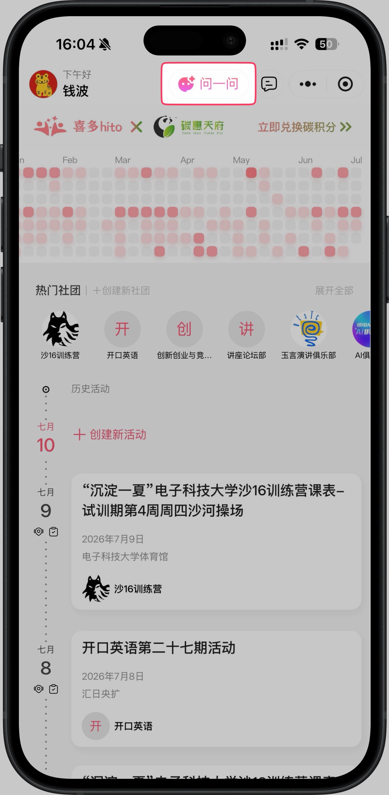
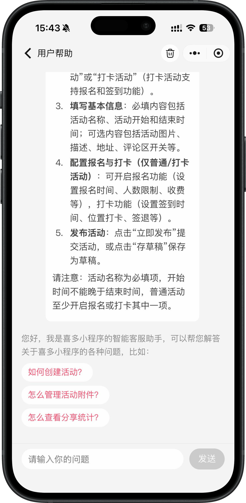

把使用问题，变成一句随时能问的话
想创建一场活动，却一时找不到入口；想设置报名或打卡，又不确定从哪里开始；看到一个功能，想知道它到底能帮自己做什么……
这些卡住运营节奏的小问题，以后不必反复翻找页面，也不必先停下手头的事去等答复。喜多全新推出 AI 问一问，为每一次“我想知道怎么做”准备了一个更直接的入口。
有问题，先问一问
不需要记住功能藏在哪一层菜单。把你的问题说出来，AI 问一问会用清晰的步骤，带你找到下一步。
在喜多首页顶部、活动详情等页面，点击醒目的“问一问”按钮，即可进入用户帮助。无论你正浏览活动，还是准备发起新的社团运营动作，遇到疑问都能马上开启对话。

进入用户帮助后，你可以像平常聊天一样说出来你的问题：如何创建活动？怎么管理活动附件？怎么查看分享统计？

AI 问一问不只是给出一个笼统的功能介绍。针对“如何创建活动”这类问题，它会一步步告诉你：选择活动类型、填写基本信息、配置报名与打卡、最后完成发布；每一步还会提醒你关键注意事项，避免踩坑。
不管你是刚开始用喜多的新朋友，还是高频运营活动的组织者，需要帮忙的时候，不妨先点开首页的“问一问”。如果 AI 问一问也解决不了，或者你有任何产品建议，欢迎通过喜多个人主页的“意见反馈”入口，或者在喜多服务号中，随时告诉我们。
喜多，私域活动运营专家